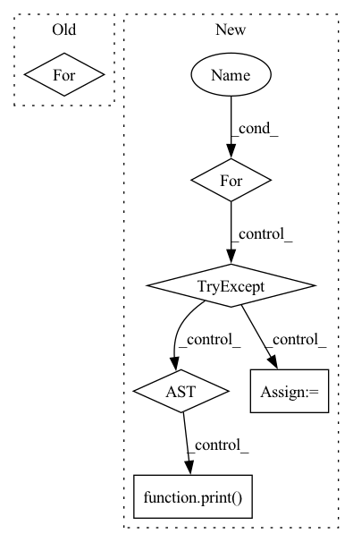

Pattern ID :8686
Before Change
// Start training.
print("Start training...")
start_time = time.time()
for i in range(start_iters, self.num_iters):
// =================================================================================== //
// 1. Preprocess input data //
// =================================================================================== //
// Fetch real images and labels.
try:
x_real, label_org = next(data_iter)
except:
data_iter = iter(data_loader)After Change
// Start training.
print("Start training...")
start_time = time.time()
for i in range(start_iters, self.num_iters):
try:
// =================================================================================== //
// 1. Preprocess input data //
// =================================================================================== //
// Fetch real images and labels.
try:
x_real, label_org = next(data_iter)
label_org = torch.unsqueeze(label_org, dim=1)
except:
data_iter = iter(self.data_loader)
x_real, label_org = next(data_iter)
// Generate target domain labels randomly.
rand_idx = torch.randperm(label_org.size(0))
label_trg = label_org[rand_idx]
// if self.dataset == "CelebA":
// c_org = label_org.clone()
// c_trg = label_trg.clone()
// elif self.dataset == "RaFD":
// c_org = self.label2onehot(label_org, self.c_dim)
// c_trg = self.label2onehot(label_trg, self.c_dim)
x_real = x_real.to(self.device) // Input images.
// c_org = c_org.to(self.device) // Original domain labels.
// c_trg = c_trg.to(self.device) // Target domain labels.
label_org = label_org.to(self.device) // Labels for computing classification loss.
label_trg = label_trg.to(self.device) // Labels for computing classification loss.
// =================================================================================== //
// 2. Train the discriminator //
// =================================================================================== //
// self.d_optimizer.zero_grad()
// Compute loss with real images.
// out_src, out_cls = self.D(x_real)
// out_real = self.D(x_real, num_domains=2)
// d_out_real = torch.gather(out_real, 1, label_org.long())
// d_loss_real = torch.mean(torch.log(d_out_src))
// d_loss_real = self.bce_loss(self.zeros_target(self.batch_size), d_out_real)
// d_loss_cls = self.classification_loss(out_cls, label_org, self.dataset)
//
// // z:latent code s_tilde:target style code
// z = self.noise(size=self.batch_size, dimension=16, device=self.device)
// s_tilde = self.F(z, num_domains=2)
//
// // target style code s_tilde
//
// // Compute loss with fake images.
// // s_tilde_tensor = torch.stack(s_tilde, 1)
// s_tilde_trg = torch.index_select(torch.stack(s_tilde, 1), 1, label_trg.squeeze().long())[:, 0, :]
// // s_tilde_trg = torch.gather(s_tilde_tensor, 1, label_trg.expand(s_tilde_tensor.size()).long())
// // s_tilde_trg = torch.gather(torch.stack(s_tilde, 1), 1, torch.unsqueeze(label_trg, 2).long())
//
// d_x_fake = self.G(x_real, s_tilde_trg)
// out_fake = self.D(d_x_fake.detach())
// d_out_fake = torch.gather(out_fake, 1, label_trg.long())
// // d_loss_fake = torch.mean(out_fake)
// d_loss_fake = self.bce_loss(self.ones_target(self.batch_size), d_out_fake)
// // Compute loss for gradient penalty.
// alpha = torch.rand(x_real.size(0), 1, 1, 1).to(self.device)
// x_hat = (alpha * x_real.data + (1 - alpha) * x_fake.data).requires_grad_(True)
// out_src, _ = self.D(x_hat)
// d_loss_gp = self.gradient_penalty(out_src, x_hat)
// // Backward and optimize.
// d_loss = -(d_loss_real + d_loss_fake)
//
// // R1 regularization
// l1_norm = torch.norm(self.D.weight, p=1)
// d_loss += l1_norm
s_tilde_trg = self.generate_style_code(label_trg)
x_fake = self.G(x_real, s_tilde_trg)
// fake_logits = self.D(x_fake)
// d_loss, d_loss_real, d_loss_fake = self.compute_adversarial_loss(True, x_real, label_org, d_x_fake, label_trg)
d_loss, d_loss_real, d_loss_fake = self.train_discriminator(x_real, x_fake, label_org,
label_trg)
// d_loss = d_loss_real + d_loss_fake + self.lambda_cls * d_loss_cls + self.lambda_gp * d_loss_gp
// d_loss = -d_loss
// self.reset_grad()
// d_loss.backward()
// self.d_optimizer.step()
// Logging.
loss = {
"D/loss": d_loss.item(),
"D/loss_real": d_loss_real.item(),
"D/loss_fake": d_loss_fake.item()
}
writer.add_scalar("D/loss", d_loss.item(), i)
writer.add_scalar("D/loss_real", d_loss_real.item(), i)
writer.add_scalar("D/loss_fake", d_loss_fake.item(), i)
// =================================================================================== //
// 3. Train the generator //
// =================================================================================== //
if (i + 1) % self.n_critic == 0:
// // style reconstruction
// g_s_tilde_trg = self.generate_style_code(label_trg)
// // g_x_fake = self.G(x_real, g_s_tilde_trg)
// // s_hat = self.E(d_x_fake)
//
// // s_hat: estimated style code of source image
// // loss style reconstruction:style reconstruction
// s_hat = self.E(self.G(x_real, g_s_tilde_trg), num_domains=2)
// s_hat_trg = torch.index_select(torch.stack(s_hat, 1), 1, label_trg.squeeze().long())[:, 0, :]
// g_loss_sty = self.l1_loss(g_s_tilde_trg, s_hat_trg)
//
// // loss cycle: preserving source characteristics
// s_hat_org = torch.index_select(torch.stack(s_hat, 1), 1, label_org.squeeze().long())[:, 0, :]
// x_fake_cyc = self.G(self.G(x_real, g_s_tilde_trg), s_hat_org)
// g_loss_cyc = self.l1_loss(x_real, x_fake_cyc)
//
// // loss style diversification:style diversification
// // z1 = self.noise(size=self.batch_size, dimension=16)
// // s1_tilde = self.F(z1, num_domains=2)
// // s1_tilde_trg = torch.index_select(torch.stack(s1_tilde, 1), 1, label_trg.squeeze().long())[:, 0, :]
// s1_tilde_trg = self.generate_style_code(label_trg)
// // z2 = self.noise(size=self.batch_size, dimension=16)
// // s2_tilde = self.F(z2, num_domains=2)
// // s2_tilde_trg = torch.index_select(torch.stack(s2_tilde, 1), 1, label_trg.squeeze().long())[:, 0, :]
// s2_tilde_trg = self.generate_style_code(label_trg)
// g_loss_ds = self.l1_loss(self.G(x_real, s1_tilde_trg), self.G(x_real, s2_tilde_trg))
// // Original-to-target domain.
// x_fake = self.G(x_real, c_trg)
// out_src, out_cls = self.D(x_fake)
// g_loss_fake = - torch.mean(out_src)
// g_loss_cls = self.classification_loss(out_cls, label_trg, self.dataset)
//
// // Target-to-original domain.
// x_reconst = self.G(x_fake, c_org)
// g_loss_rec = torch.mean(torch.abs(x_real - x_reconst))
// out_real = self.D(x_real, num_domains=2)
// g_out_real = torch.gather(out_real, 1, label_org.long())
// g_loss_real = self.bce_loss(self.zeros_target(self.batch_size), g_out_real)
// // target style code s_tilde
//
// // Compute loss with fake images.
// // x_fake = self.G(x_real, s_tilde[0])
// out_fake = self.D(g_x_fake)
// g_out_fake = torch.gather(out_fake, 1, label_org.long())
// // d_loss_fake = torch.mean(out_fake)
// g_loss_fake = self.bce_loss(self.ones_target(self.batch_size), g_out_fake)
g_loss, g_adv_loss, g_loss_sty, g_loss_cyc, g_loss_ds = self.train_generator(x_real, x_fake,
s_tilde_trg, label_org,
label_trg)
// g_loss = self.train_generator(x_real, label_org, label_trg)
// g_adv_loss = self.compute_adversarial_loss(False, x_real, label_org, g_s_tilde_trg, label_trg)[0]
// Backward and optimize.
// g_loss = g_adv_loss + self.lambda_sty * g_loss_sty + self.lambda_cyc * g_loss_cyc + self.lambda_ds * g_loss_ds
// self.reset_grad()
// g_loss.backward()
// self.g_optimizer.step()
// self.e_optimizer.step()
// self.f_optimizer.step()
// Logging.
// loss["G/loss_fake"] = g_loss_fake.item()
// loss["G/loss_sty"] = g_loss_sty.item()
// loss["G/loss_cyc"] = g_loss_cyc.item()
// loss["G/loss_ds"] = g_loss_ds.item()
loss["G/loss"] = g_loss.item()
loss["G/loss_adv"] = g_adv_loss.item()
loss["G/loss_sty"] = g_loss_sty.item()
loss["G/loss_cyc"] = g_loss_cyc.item()
loss["G/loss_ds"] = g_loss_ds.item()
// writer.add_scalar("G/loss_cyc", g_loss_cyc.item(), i)
// writer.add_scalar("G/loss_ds", g_loss_ds.item(), i)
writer.add_scalar("G/loss", g_loss.item(), i)
writer.add_scalar("G/loss_adv", g_adv_loss.item(), i)
writer.add_scalar("G/loss_sty", g_loss_sty.item(), i)
writer.add_scalar("G/loss_cyc", g_loss_cyc.item(), i)
writer.add_scalar("G/loss_ds", g_loss_ds.item(), i)
// =================================================================================== //
// 4. Miscellaneous //
// =================================================================================== //
// Print out training information.
if (i + 1) % self.log_step == 0:
et = time.time() - start_time
et = str(datetime.timedelta(seconds=et))[:-7]
log = "Elapsed [{}], Iteration [{}/{}]".format(et, i + 1, self.num_iters)
for tag, value in loss.items():
log += ", {}: {:.4f}".format(tag, value)
print(log)
// if self.use_tensorboard:
// for tag, value in loss.items():
// self.logger.scalar_summary(tag, value, i + 1)
// Translate fixed images for debugging.
if (i + 1) % self.sample_step == 0:
with torch.no_grad():
// random style: source images + generated images
g_s_tilde_trg = self.generate_style_code(label_trg)
// reference guided style: x_real as the reference image
ref_style = self.get_reference_style(x_real, label_org)
x_fake_list = [x_fixed, self.G(x_fixed, g_s_tilde_trg), x_real, self.G(x_fixed, ref_style)]
// for c_fixed in label_org:
x_concat = torch.cat(x_fake_list, dim=3)
sample_path = os.path.join(self.sample_dir, "{}-images.jpg".format(i + 1))
save_image(self.denorm(x_concat.data.cpu()), sample_path, nrow=1, padding=0)
print("Saved real and fake images into {}...".format(sample_path))
grid = torchvision.utils.make_grid(x_concat)
writer.add_image("images", grid, 0)
// writer.add_graph(model, images)
// Save model checkpoints.
if (i + 1) % self.model_save_step == 0:
G_path = os.path.join(self.model_save_dir, "{}-G.ckpt".format(i + 1))
D_path = os.path.join(self.model_save_dir, "{}-D.ckpt".format(i + 1))
E_path = os.path.join(self.model_save_dir, "{}-E.ckpt".format(i + 1))
F_path = os.path.join(self.model_save_dir, "{}-F.ckpt".format(i + 1))
torch.save(self.G.state_dict(), G_path)
torch.save(self.D.state_dict(), D_path)
torch.save(self.E.state_dict(), E_path)
torch.save(self.F.state_dict(), F_path)
print("Saved model checkpoints into {}...".format(self.model_save_dir))
//
// // Decay learning rates.
// if (i + 1) % self.lr_update_step == 0 and (i + 1) > (self.num_iters - self.num_iters_decay):
// g_lr -= (self.g_lr / float(self.num_iters_decay))
// d_lr -= (self.d_lr / float(self.num_iters_decay))
// self.update_lr(g_lr, d_lr)
// print("Decayed learning rates, g_lr: {}, d_lr: {}.".format(g_lr, d_lr))
// Decay weight lambda ds
if (i + 1) < self.num_iters_decay:
self.lambda_ds = 1 - 0.00002 * (i + 1)
// print("Decayed weight lambda ds , lambda_ds: {}".format(self.lambda_ds))
except Exception as e:
print( str(e))
// close the tensorboard summary writter
writer.close()
In pattern: SUPERPATTERN
Frequency: 4
Non-data size: 6
Instances Fragment ID: 31560041
Project Name: habout632/stargan2
Commit Name: ee158d86db0ac3b65b72abf65b8b6fe3497fe4ef
Time: 2020-03-15
Author: jifeng.yin@silknets.com
File Name: stargan2_solver.py
M Class Name: Solver
N Class Name: Solver
M Method Name: train(1)
N Method Name: train(1)
M Parent Class: object
N Parent Class: object
M File Name: stargan2_solver.py
N File Name: stargan2_solver.py
M Start Line: 464
M End Line: 729
N Start Line: 493
N End Line: 766
Before Change
stop_at = start_at + datetime.timedelta(seconds=3600) // 下一个小时整点
pipelines = dbsession.query(Pipeline).filter(Pipeline.schedule_type=="crontab").all() // 获取model记录
for pipeline in pipelines: // 循环发起每一个调度
print("begin make timerun config %s"%pipeline.name)
// 计算start_at和stop_at之间，每一个任务的调度时间，并保障最小周期不超过设定的resolution。
for eta in next_schedules(pipeline.cron_time, start_at, stop_at, resolution=resolution): //
print("执行时间点", eta)After Change
// stop_at = start_at + datetime.timedelta(seconds=3600) // 下一个小时整点
pipelines = dbsession.query(Pipeline).filter(Pipeline.schedule_type=="crontab").all() // 获取model记录
for pipeline in pipelines: // 循环发起每一个调度
start_at = datetime.datetime.strptime(pipeline.cronjob_start_time,"%Y-%m-%d %H:%M:%S")
// 缩小指定范围，认为最后一个任务记录之前是调度记录都是已经产生的
last_run = dbsession.query(RunHistory).filter(RunHistory.pipeline_id==pipeline.id).order_by(RunHistory.id.desc()).first()
if last_run:
last_execution_date = datetime.datetime.strptime(last_run.execution_date,"%Y-%m-%d %H:%M:%S")
if last_execution_date>start_at:
start_at=last_execution_date
stop_at = datetime.datetime.now() + datetime.timedelta(seconds=300) // 下一个调度时间点，强制5分钟调度一次。这之前的 任务，该调度的都发起或者延迟发起
print("begin make timerun config %s"%pipeline.name)
// 计算start_at和stop_at之间，每一个任务的调度时间，并保障最小周期不超过设定的resolution。
try:
for eta in next_schedules(pipeline.cron_time, start_at, stop_at, resolution=resolution): //
print("执行时间点", eta)
execution_date = eta.strftime("%Y-%m-%d %H:%M:%S")
if execution_date>pipeline.cronjob_start_time:
// 要检查是否重复添加记录了
exist_timeruns=dbsession.query(RunHistory).filter(RunHistory.pipeline_id==pipeline.id).filter(RunHistory.execution_date==execution_date).all()
if not exist_timeruns:
pipeline_file = dag_to_pipeline(pipeline=pipeline, dbsession=dbsession,execution_date=execution_date) // 合成workflow
// print("make pipeline file %s" % pipeline_file)
if pipeline_file:
schedule_history = RunHistory(
created_on=datetime.datetime.now(),
pipeline_id=pipeline.id,
pipeline_argo_id="",
pipeline_file=pipeline_file,
version_id="",
run_id="",
message="",
status="comed",
execution_date=execution_date
)
dbsession.add(schedule_history)
dbsession.commit()
else:
push_message(conf.get("ADMIN_USER").split(","),"pipeline %s make config fail"%pipeline.name)
if len(exist_timeruns)>1:
for i in range(1,len(exist_timeruns)):
exist_timerun = exist_timeruns[i]
dbsession.delete(exist_timerun)
dbsession.commit()
push_message(conf.get("ADMIN_USER").split(","),"发现%s 任务流在 %s 时刻存在多个定时记录"%(pipeline.name,execution_date))
// 无论产生任务怎么样，上传都是要执行的，可能会上传之前没有上传的任务
// 直接触发一次，在5分钟以内的都延迟提交。
// upload_timerun(pipeline,stop_at)
except Exception as e:
print( e)
upload_timerun(pipeline_id=pipeline.id,stop_time=stop_at.strftime("%Y-%m-%d %H:%M:%S"))
except Exception as e: Fragment ID: 31560043
Project Name: tencentmusic/cube-studio
Commit Name: 842a46a1832379aade515f448e0763d7b1cf0194
Time: 2021-10-14
Author: pengluan@tencent.com
File Name: myapp/tasks/schedules.py
M Class Name: AnonimousClass
N Class Name: AnonimousClass
M Method Name: make_timerun_config(1)
N Method Name: make_timerun_config(1)
M Parent Class:
N Parent Class:
M File Name: myapp/tasks/schedules.py
N File Name: myapp/tasks/schedules.py
M Start Line: 452
M End Line: 486
N Start Line: 436
N End Line: 500
Before Change
if ftype == "fiftyone.core.fields.EmbeddedDocumentField":
embedded_doc_inds.append(idx)
for field in dataset_dict.get("frame_fields", []):
field["fields"] = []
dataset_dict["app_sidebar_groups"] = None
After Change
else:
field["fields"] = []
for field in dataset_dict.get("frame_fields", []):
ftype = field.get("ftype", None)
embedded_doc_type = field.get("embedded_doc_type", None)
if ftype == "fiftyone.core.fields.EmbeddedDocumentField":
try:
field["fields"] = _infer_fields(
db[dataset_dict["frame_collection_name"]],
name,
embedded_doc_type,
)
except Exception as e:
print(
"Failed to infer schema of embedded frame field "%s" "
"of type "%s": %s" % (name, embedded_doc_type, e)
)
field["fields"] = []
else:
field["fields"] = []
Fragment ID: 31560044
Project Name: voxel51/fiftyone
Commit Name: f31fb2741432a5337b4ed96f49979fa51ae68041
Time: 2022-04-03
Author: brimoor@umich.edu
File Name: fiftyone/migrations/revisions/v0_16_0.py
M Class Name: AnonimousClass
N Class Name: AnonimousClass
M Method Name: up(2)
N Method Name: up(2)
M Parent Class:
N Parent Class:
M File Name: fiftyone/migrations/revisions/v0_16_0.py
N File Name: fiftyone/migrations/revisions/v0_16_0.py
M Start Line: 16
M End Line: 44
N Start Line: 13
N End Line: 71
Before Change
if ftype == "fiftyone.core.fields.EmbeddedDocumentField":
embedded_doc_inds.append(idx)
for field in dataset_dict.get("frame_fields", []):
field["fields"] = []
dataset_dict["app_sidebar_groups"] = None
After Change
else:
field["fields"] = []
for field in dataset_dict.get("frame_fields", []):
ftype = field.get("ftype", None)
embedded_doc_type = field.get("embedded_doc_type", None)
if ftype == "fiftyone.core.fields.EmbeddedDocumentField":
try:
field["fields"] = _infer_fields(
db[dataset_dict["frame_collection_name"]],
name,
embedded_doc_type,
)
except Exception as e:
print(
"Failed to infer schema of embedded frame field "%s" "
"of type "%s": %s" % (name, embedded_doc_type, e)
)
field["fields"] = []
else:
field["fields"] = []
Fragment ID: 31560046
Project Name: voxel51/fiftyone
Commit Name: 700c31ad6f19f9f7a5bc040bbf771fec9ae2db69
Time: 2022-04-27
Author: brimoor@umich.edu
File Name: fiftyone/migrations/revisions/v0_16_0.py
M Class Name: AnonimousClass
N Class Name: AnonimousClass
M Method Name: up(2)
N Method Name: up(2)
M Parent Class:
N Parent Class:
M File Name: fiftyone/migrations/revisions/v0_16_0.py
N File Name: fiftyone/migrations/revisions/v0_16_0.py
M Start Line: 16
M End Line: 44
N Start Line: 13
N End Line: 71